복습: 5주차 마지막 실습 코드 구현
달팽이 이동: for로 방문 횟수 관리, if로 경계와 방향 갱신
반복 구조와 여러 값의 저장
달팽이 이동: for로 방문 횟수 관리, if로 경계와 방향 갱신
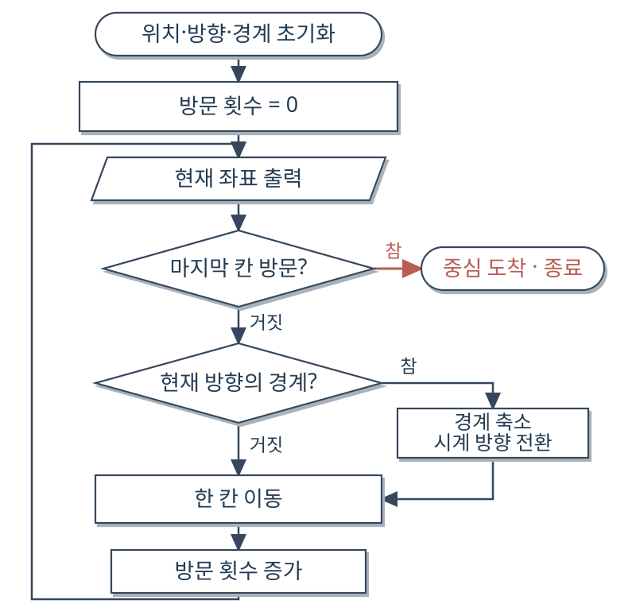
실행 결과가 여기에 표시됩니다.
실행 준비
if (direction == 0
&& col == right) {
top++;
direction = 1;
}
| 경계 | 갱신 전 | 갱신 후 |
|---|---|---|
| right | 4 | 4 |
| left | 0 | 0 |
| top | 0 | 1 |
| bottom | 4 | 4 |
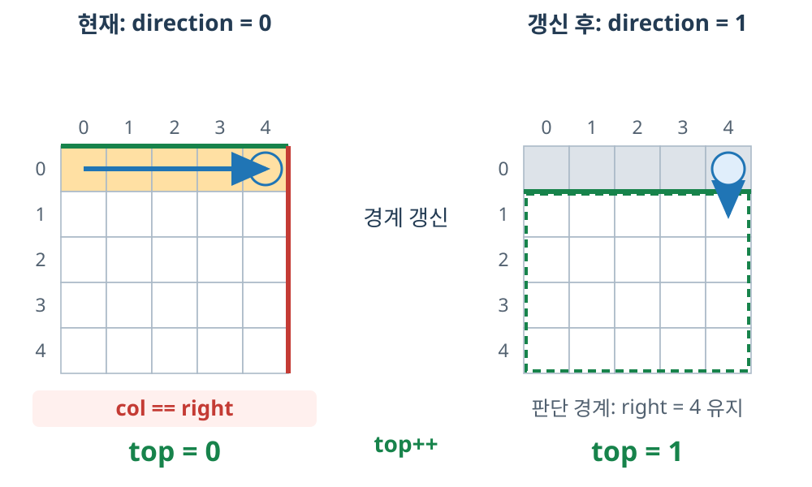
else if (direction == 1
&& row == bottom) {
right--;
direction = 2;
}
| 경계 | 갱신 전 | 갱신 후 |
|---|---|---|
| right | 4 | 3 |
| left | 0 | 0 |
| top | 1 | 1 |
| bottom | 4 | 4 |
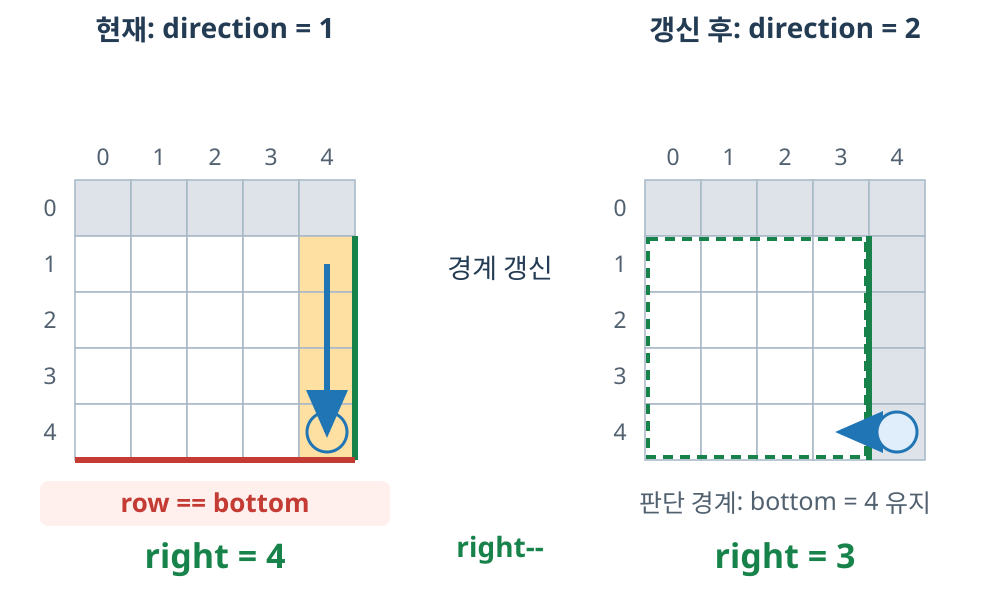
else if (direction == 2
&& col == left) {
bottom--;
direction = 3;
}
| 경계 | 갱신 전 | 갱신 후 |
|---|---|---|
| right | 3 | 3 |
| left | 0 | 0 |
| top | 1 | 1 |
| bottom | 4 | 3 |
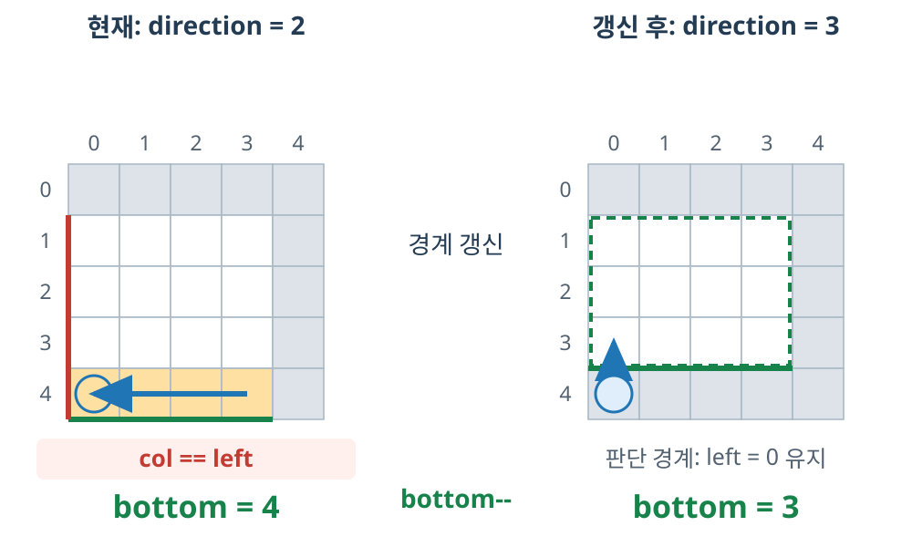
else if (direction == 3
&& row == top) {
left++;
direction = 0;
}
| 경계 | 갱신 전 | 갱신 후 |
|---|---|---|
| right | 3 | 3 |
| left | 0 | 1 |
| top | 1 | 1 |
| bottom | 3 | 3 |
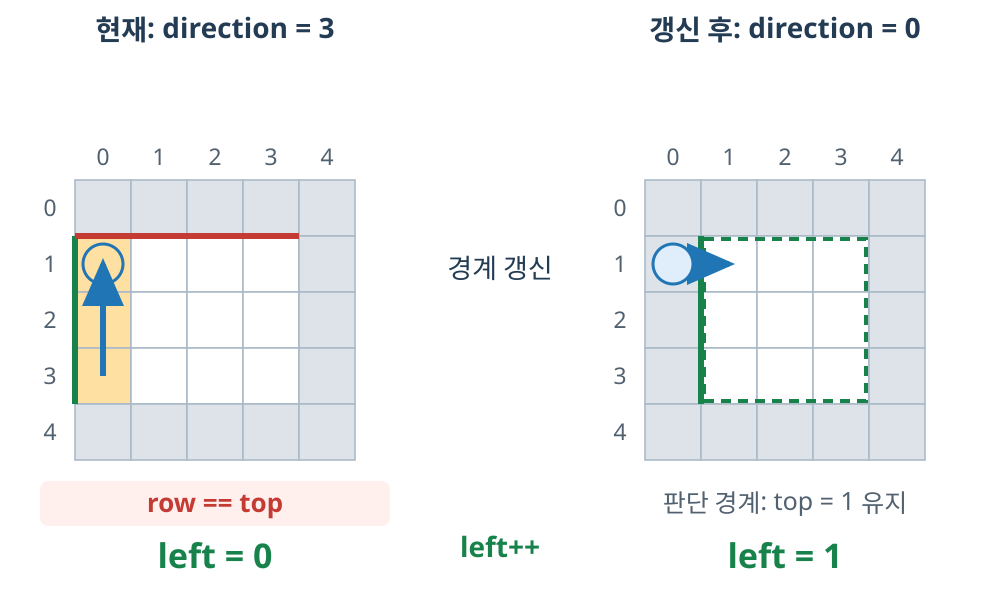
if (direction == 0
&& col == right) {
top++;
direction = 1;
}
| 경계 | 갱신 전 | 갱신 후 |
|---|---|---|
| right | 3 | 3 |
| left | 1 | 1 |
| top | 1 | 2 |
| bottom | 3 | 3 |
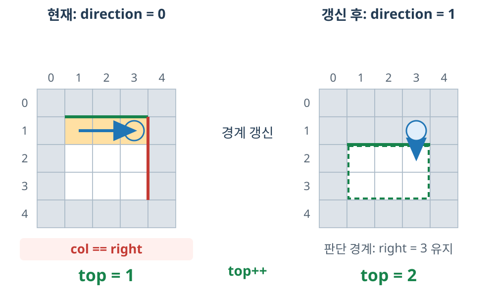
else if (direction == 1
&& row == bottom) {
right--;
direction = 2;
}
| 경계 | 갱신 전 | 갱신 후 |
|---|---|---|
| right | 3 | 2 |
| left | 1 | 1 |
| top | 2 | 2 |
| bottom | 3 | 3 |
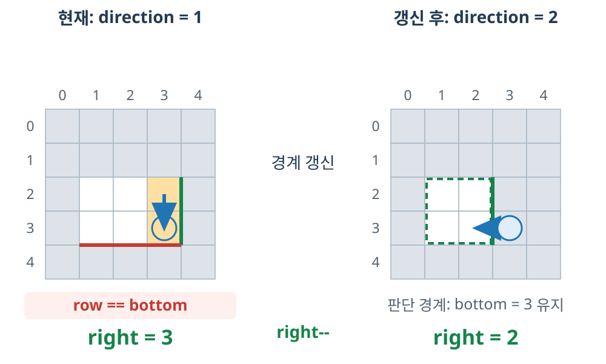
else if (direction == 2
&& col == left) {
bottom--;
direction = 3;
}
| 경계 | 갱신 전 | 갱신 후 |
|---|---|---|
| right | 2 | 2 |
| left | 1 | 1 |
| top | 2 | 2 |
| bottom | 3 | 2 |
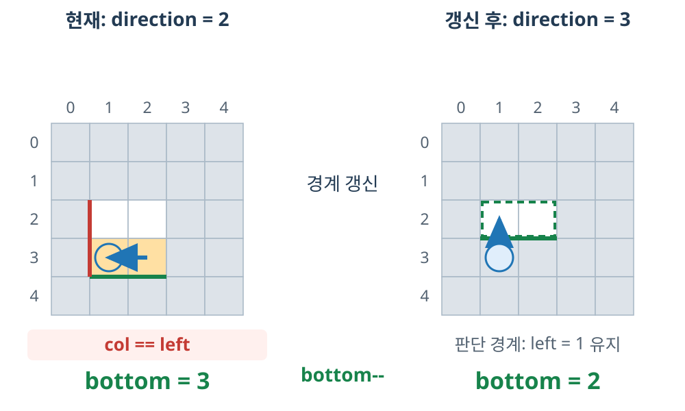
else if (direction == 3
&& row == top) {
left++;
direction = 0;
}
| 경계 | 갱신 전 | 갱신 후 |
|---|---|---|
| right | 2 | 2 |
| left | 1 | 2 |
| top | 2 | 2 |
| bottom | 2 | 2 |
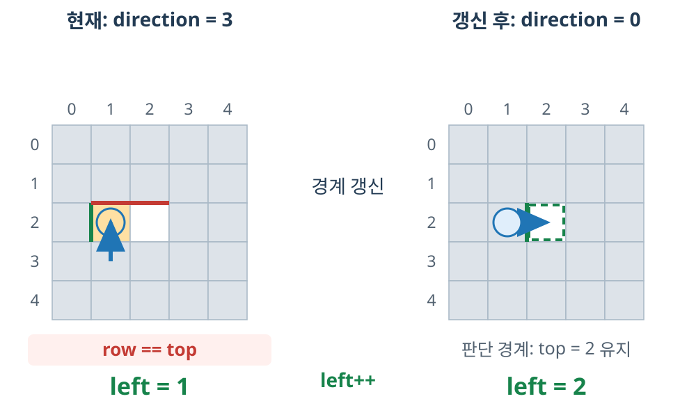
printf("%d %d\n", row, col);
if (count == n * n) {
break;
}
| 경계 | 도착 시 | 종료 후 |
|---|---|---|
| right | 2 | 2 |
| left | 2 | 2 |
| top | 2 | 2 |
| bottom | 2 | 2 |
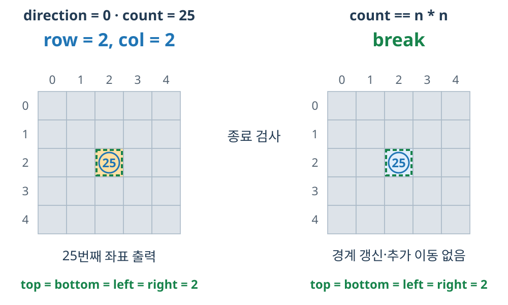
바깥 반복 한 번에, 안쪽 반복 전체 수행
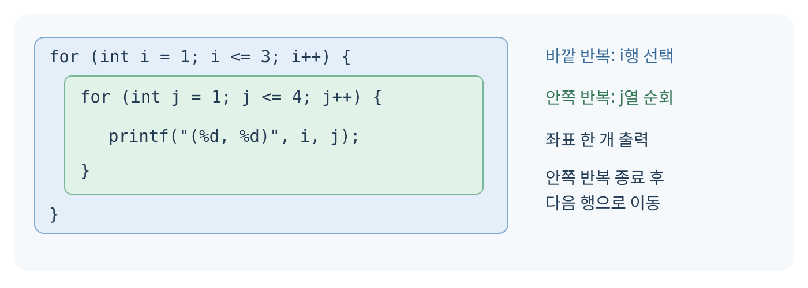
i는 행, j는 열의 진행 상태 저장.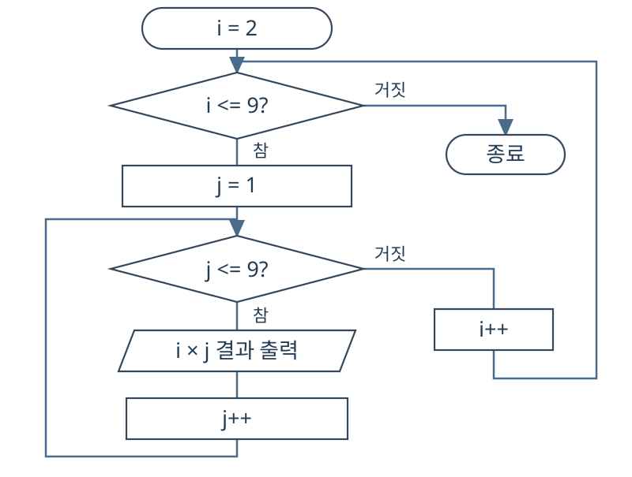
i = 2로 2단 시작.j = 1부터 9까지 증가하며 2 × j 출력.j = 10이면 안쪽 조건 거짓 → 2단 종료.i++로 다음 단 선택, j를 다시 1로 초기화.for (int i = 2; i <= 9; i++) {
for (int j = 1; j <= 9; j++) {
printf("%d x %d = %d\n",
i, j, i * j);
}
}
i 고정, j만 증가.| 출력 순서 | i: 단 | j: 곱할 수 | 출력 |
|---|---|---|---|
| 1 | 2 | 1 | 2 x 1 = 2 |
| … | … | … | 중간 생략 |
| 9 | 2 | 9 | 2 x 9 = 18 |
| 10 | 3 | 1 | 3 x 1 = 3 |
| … | … | … | 중간 생략 |
| 64 | 9 | 1 | 9 x 1 = 9 |
| 72 | 9 | 9 | 9 x 9 = 81 |
행은 바깥에서, 한 줄의 문자는 안쪽에서 결정
*****
*****
*****
*****
*****
n.i를 1부터 n까지 반복
j를 1부터 n까지 반복
별 하나 출력
줄바꿈
i: 출력할 행 선택.j: 같은 행에서 별 하나씩 출력.실행 결과가 여기에 표시됩니다.
*
***
*****
i = 1, 3, 5, …, n.(n + 1) / 2.| 바깥 변수 i | 안쪽 변수 j | 출력할 별 개수 |
|---|---|---|
| 1 | 1 | 1 |
| 3 | 1~3 | 3 |
| 5 | 1~5 | 5 |
i = 1, i <= n, i += 2.j = 1, j <= i, j++.n을 현재 값 i로 변경.실행 결과가 여기에 표시됩니다.
*****
***
*
i = n, n-2, …, 1.| 바깥 변수 i | 안쪽 변수 j | 출력할 별 개수 |
|---|---|---|
| 5 | 1~5 | 5 |
| 3 | 1~3 | 3 |
| 1 | 1 | 1 |
j = 1, j <= i, j++ 유지.실행 결과가 여기에 표시됩니다.
*
*
**
***
*****
********
1~10.실행 결과가 여기에 표시됩니다.
for (int i = 1; i <= 3; i++) {
for (int j = 1; j <= 5; ) {
printf("*");
}
printf("\n");
}
j = 1을 반복하는 경우도 같은 유형.| 단계 | i | j | 결과·다음 동작 |
|---|---|---|---|
| 안쪽 초기화 | 1 | 1 | j <= 5 검사 |
| 조건 검사 | 1 | 1 | 참 → 별 출력 |
| 별 출력 후 | 1 | 1 | 증감 없이 조건 재검사 |
| 다시 조건 검사 | 1 | 1 | 계속 참 → 별 출력 반복 |
j가 계속 1 → 조건이 거짓이 되지 않음.i++에 도달하지 못함.for (int j = 1; j <= 5; j++)
j = 6에서 안쪽 반복 종료 → 줄바꿈 → i++.for (int i = 1; i <= 3; i++) {
for (int j = 1; j <= 5; j++) {
printf("*");
i = 1;
}
printf("\n");
}
| 단계 | i | 다음 동작 |
|---|---|---|
| 첫 행의 안쪽 본문 | 1 | j는 5까지 증가 |
| 안쪽 반복 종료 후 | 1 | 줄바꿈 |
| 바깥 증감식 i++ | 2 | i <= 3 참 |
| 다음 행의 안쪽 본문 | 1 | i = 1로 되돌림 |
| 안쪽 반복 종료 후 | 1 | 다시 줄바꿈 |
| 바깥 증감식 i++ | 2 | 같은 과정 반복 |
i는 본문에서 1 → 증감 후 2 반복.j의 변화는 안쪽 for, i의 변화는 바깥 for에서 관리.i = 1, 2, 3의 세 행 출력 후 i = 4에서 종료.기차로 배열 이해 → 자료형별 선언·초기화 → 원소 출력
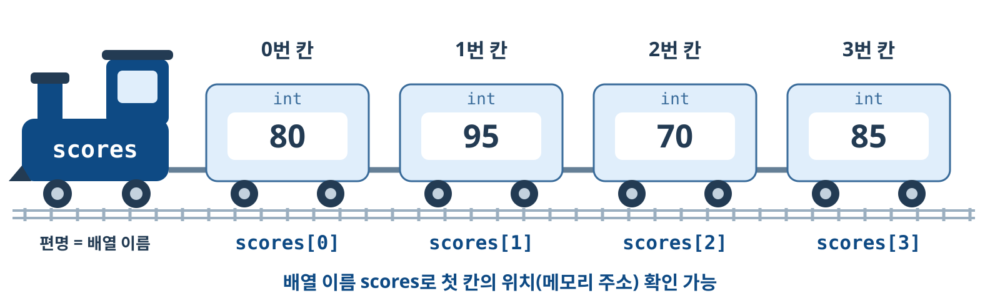
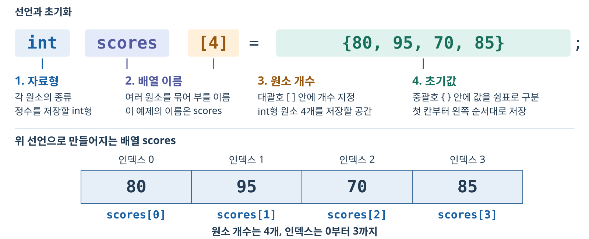
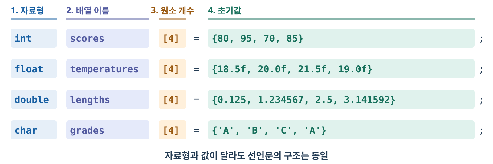
float 초기값은 f 접미사, 문자 초기값은 작은따옴표 사용.| 자료형 | 배열 이름 | 원소 개수 |
|---|---|---|
int |
scores |
4 |
float |
temperatures |
4 |
double |
lengths |
4 |
char |
grades |
4 |
자료형 배열이름[원소개수];실행 결과가 여기에 표시됩니다.
| 배열 이름 | 0번 | 1번 | 2번 | 3번 |
|---|---|---|---|---|
scores |
80 | 95 | 70 | 85 |
temperatures |
18.5f | 20.0f | 21.5f | 19.0f |
lengths |
0.125 | 1.234567 | 2.5 | 3.141592 |
grades |
'A' | 'B' | 'C' | 'A' |
배열이름[인덱스] = 값;실행 결과가 여기에 표시됩니다.
80 95 70 85
18.5 20.0 21.5 19.0
0.125000 1.234567 2.500000 3.141592
A B C A
실행 결과가 여기에 표시됩니다.
#include <stdio.h>
void main() {
char Sh[] = {'#', '@', '&'};
int a, b;
for (a = 1; a <= 3; a++) {
for (b = 1; b <= a; b++) {
printf("%c", Sh[a-b]);
}
printf("\n");
}
}
#
@#
&@#
5 3 4 1 2 → 1 2 3 4 5.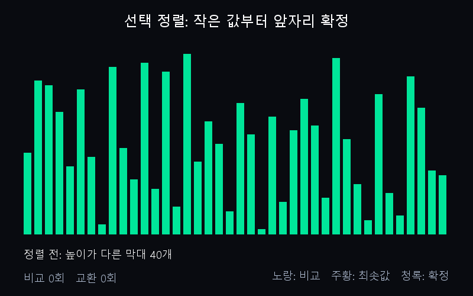
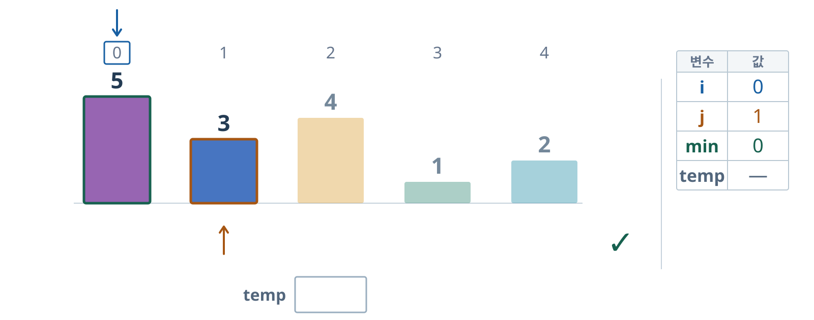
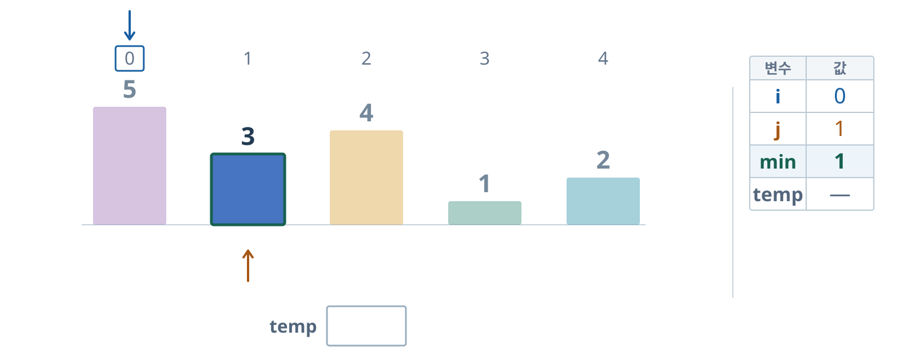
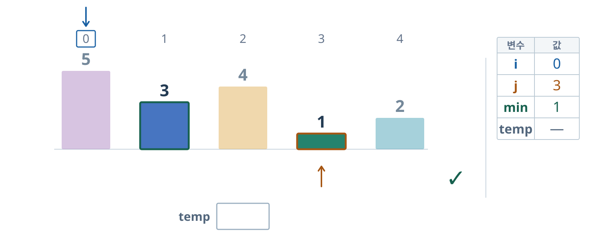
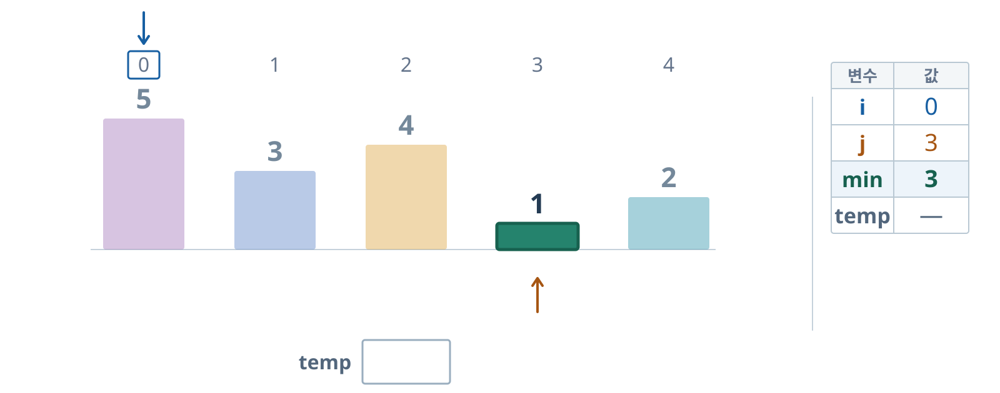
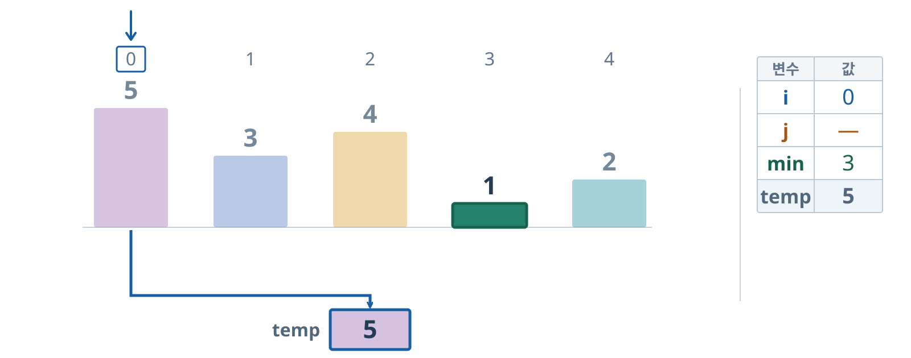
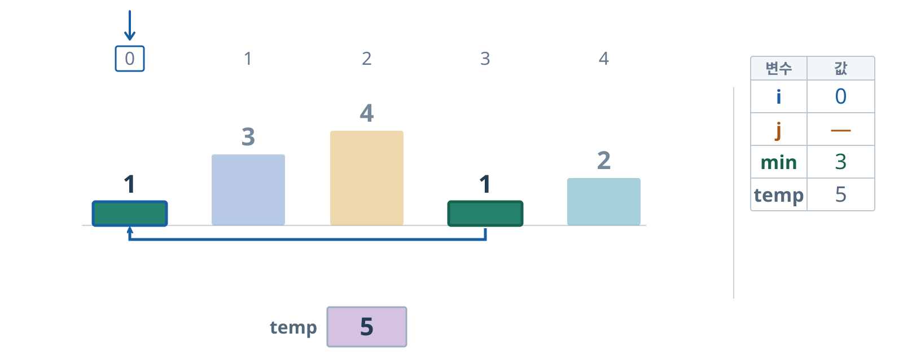
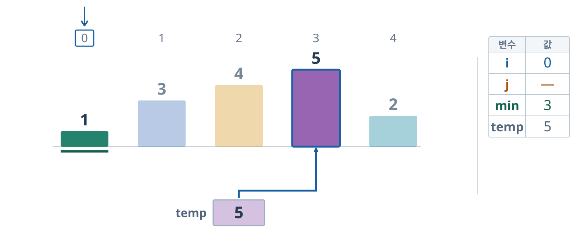
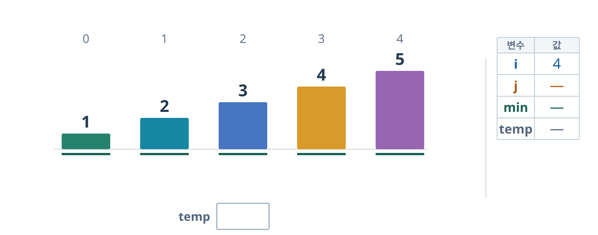
실행 결과가 여기에 표시됩니다.
C 코드 실행 후 출력한 배열 순서대로 막대 이동
초기 배열
막대 높이 = 값 · 같은 값은 같은 색 유지
정렬할 값의 순서가 바뀌면 막대 위치도 함께 변경
5 3 4 1 2
1 3 4 5 2
1 2 4 5 3
1 2 3 5 4
1 2 3 4 5
| 개념 | 기억할 내용 |
|---|---|
| 실행 순서 | 바깥 반복 한 번마다 안쪽 반복 전체 수행 |
| 안쪽 초기화 | 다음 바깥 반복에서 j를 시작값으로 다시 초기화 |
| 반복 횟수 | 구구단은 8개 단 × 9개 항 = 72회, 별 출력은 각 줄의 횟수 합산 |
| 출력 위치 | 별 하나는 안쪽 반복, 줄바꿈은 안쪽 반복 종료 후 |
| 안쪽 반복 오류 | j++ 누락으로 j가 1에 머무르면 무한 반복 |
| 바깥 변수 i | 안쪽 반복에서 i를 다시 초기화하지 않기 |
| 개념 | 기억할 내용 |
|---|---|
| 배열 선언 | 같은 자료형의 여러 값 저장. int, float, double, char 사용 |
| 초기화·대입 | 선언 시 {...}로 초기화, 선언 후 a[i] = 값;으로 원소에 대입 |
| 인덱스 범위 | 원소 N개의 인덱스는 0~N−1. 순회 조건은 i < N |
| 원소 출력 | a[i]로 접근, 정수 %d·실수 %f·문자 %c로 출력 |
| 선택 정렬 | 남은 구간의 최솟값 위치 min을 찾아 현재 자리 i와 교환 |
| 값 교환 | 원래 값을 temp에 보관한 뒤 두 원소의 값 교환 |